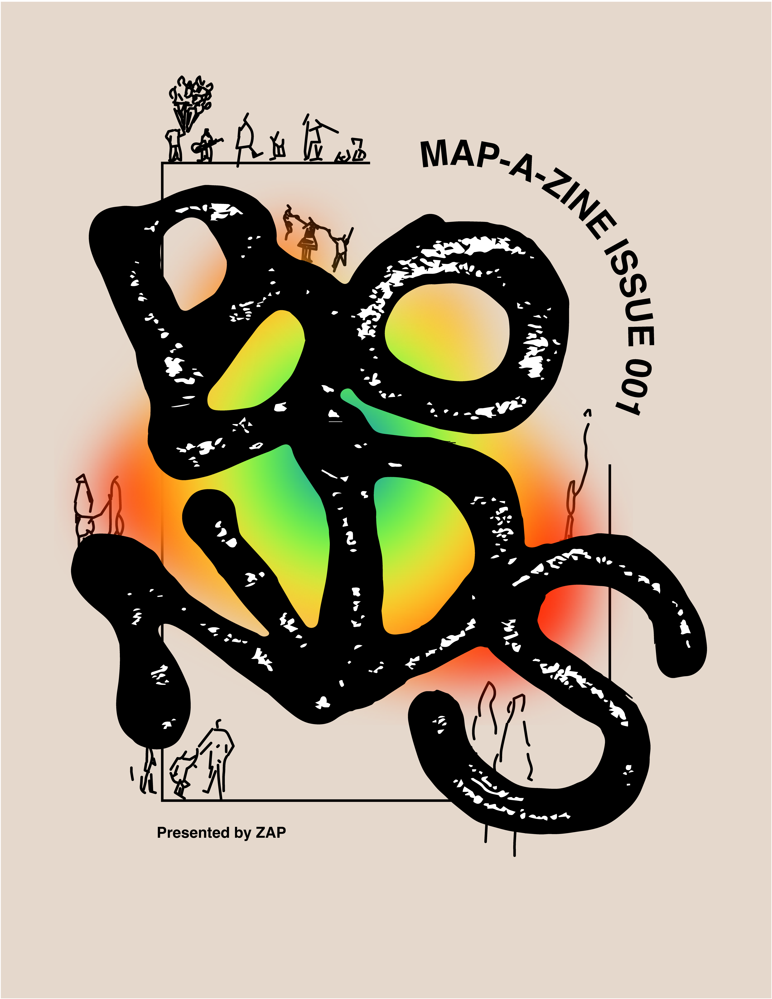

Read the full zine here.
BONDS
2022
BONDS is ZAP’s (a student organisation co-founded by myself and a group of friends) first issue of a collaborative zine. The zine identifies itself around the bonds between our community, its people, and places. I was the main Creative Director for this project alongside Abby Chen. As such, I closely led a Design and Production team in order to create the overall look and feel of the zine. Additionally, I organised the collection of work from artists as well as the general oversight of the project.
Adobe Indesign, Photoshop, Illustrator, and Procreate
Read the full zine here.
Please rotate your device.